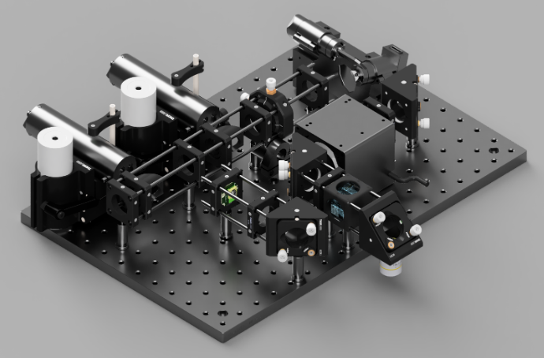
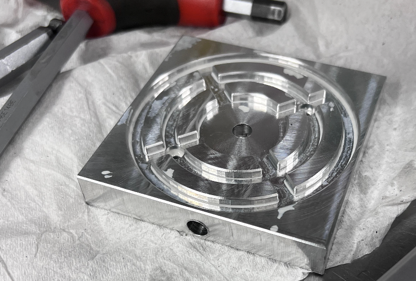
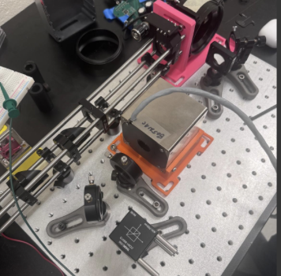

Cost-Efficient Photolithography
Opto-mechanical engineering and structural analysis for maker-scale microfabrication.

For my Senior Design capstone, my team and I are developing a cost-efficient photolithography system. The primary objective is to build a university- and maker-scale lithography machine that pushes the performance boundaries of current DIY builds while remaining open-source and reproducible.
As the mechanical lead, my work focuses primarily on designing the rigid mechanical components, integrating the complex optical assembly, and validating the structural integrity of the system through Finite Element Analysis (FEA) to ensure sub-micron resolution.

02. Custom Opto-Mechanics
Maintaining absolute rigidity in the optical train is critical. To ensure the 402 nm UV patterning laser and the 540 nm red alignment laser remain perfectly co-linear, I designed and fabricated custom mechanical housings, laser mounts, and holders.
These custom fixtures secure the optics to the breadboard, minimizing vibrational noise and thermal drift. By structurally isolating the beam path leading into the mirror galvanometer, the system maintains the exact tolerances required to reliably scan the light across the vacuum chuck.
CAD Design Vibration Isolation
03. The Optical Assembly
Before physically assembling the optics, I conducted ray simulations using Optiland (with further refinement in Zemax) to predict aberrations and estimate optimal lens positioning.
The physical assembly incorporates a 4F optical system paired with a microscope objective. This configuration acts as a high-precision beam expander, effectively lowering the diffraction limit of the system to accurately project nanoscale features onto the photoresist.
Optiland / Zemax 4F Optical System
04. FEA & Thermal Expansion Analysis
Because sub-micron patterning requires the UV and red alignment lasers to remain perfectly co-linear, opto-mechanical stability over long exposure cycles is paramount. I utilized Finite Element Analysis (FEA) specifically on our custom laser mounts to evaluate mechanical deflection under standard operational loads.
Beyond static structural limits, the FEA modeled the effects of thermal expansion on the optical alignment. By simulating the thermal gradients generated by the environment and the components themselves, I iteratively optimized the mount geometries and material thicknesses to minimize thermally-induced focal drift, guaranteeing strict alignment tolerances.
Finite Element Analysis Thermal-Structural Simulation